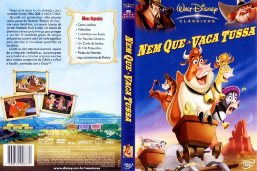

Outro Título:Home on the Range
País:United States, 76 minutos
Idiomas falados:Espanhol, Inglês, Português
Gênero(s):Animação, Família
Diretor(s):Will Finn, John Sanford
Escritor(es):Will Finn, John Sanford
Codec:MPEG-2 (DVD)
Número: 5830


Certificado:L
Sinopse:
A fazenda Caminho do Paraíso está em pânico, pois uma ação de despejo ameaça acabar com o local. Temendo ir para o matadouro, os animais da fazenda decidem ajudar a dona a conseguir a quantia necessária para pagar a hipoteca. O alvo escolhido pelo grupo é o perigoso bandido Alameda Slim, que tem uma grande recompensa reservada para quem capturá-lo.
Elenco:

Tipo de mídia: DVD5,
Legendas: Espanhol, Inglês, Português, Sem Legendas
Alugado: Não
Tela: Anamorphic Widescreen